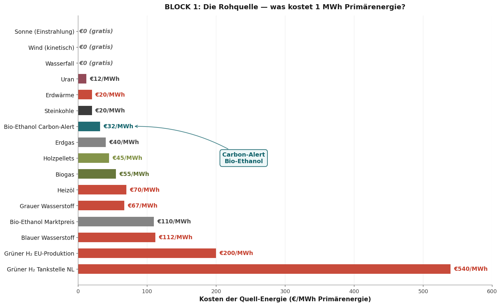
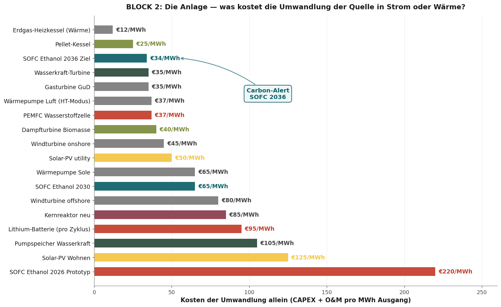
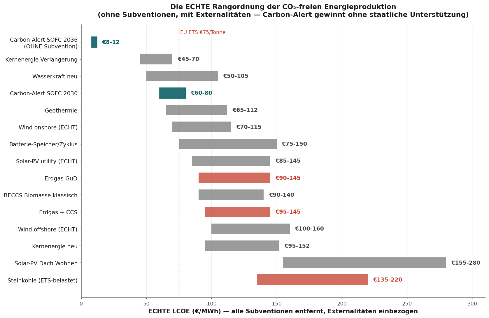
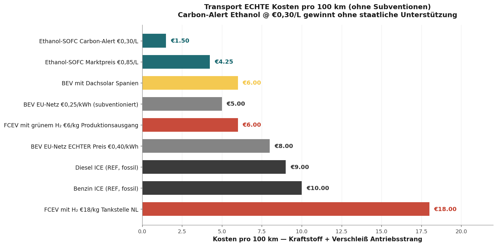
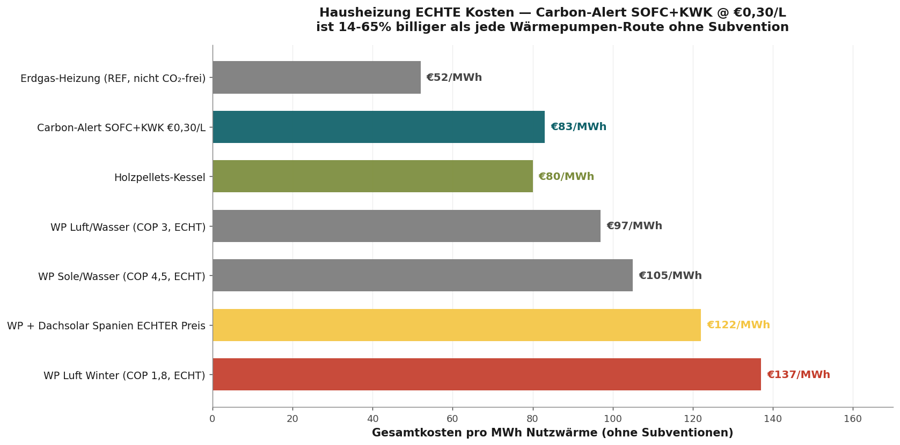
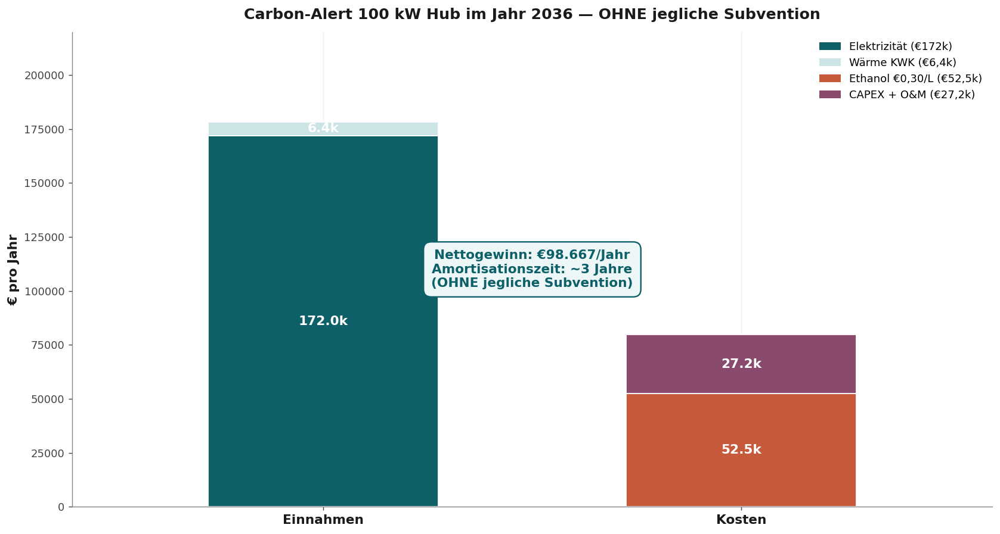

Auf dem Bock oder am Gepäckträger
Europa kann wählen — heute, nicht morgen

Auf dem Bock sitzt der Kutscher. Er hält die Zügel. Er sieht den Weg. Er bestimmt die Route. Am Gepäckträger sitzt, wer sich hat mitnehmen lassen. Er sieht nichts. Er entscheidet nichts. Er ist abhängig. Europa hat dreißig Jahre auf diesem Platz gesessen — auf Batterien aus China, auf Öl aus Saudi-Arabien, auf Gas aus Russland. Jetzt liegt ein Zügel bereit, den wir selbst nehmen können. Aber nur heute. Nicht morgen.
Die These dieses Artikels
Wer wartet, bis andere es sehen, sitzt bald wieder hinten. Vorsprung ist nicht das, was sie in Brüssel oder Den Haag sagen. Vorsprung ist, was Sie selbst früher sehen, früher verstehen und früher anpacken als der Rest. Der Kutscher, der auf Konsens wartet, wird selbst zur Fracht.
Die Zahlen in diesem Artikel zeigen, dass es eine Energieroute gibt, die ohne Subvention gewinnt. Auf jeder Messgröße. Diese Route ist nicht europäisch erfunden, kann aber wohl europäisch gebaut werden. Wenn wir heute beginnen. Sonst baut Japan, Korea und China es. Und wir importieren es in sieben Jahren zu asiatischen Lizenzbedingungen.
Dieser Entscheid liegt nicht bei Brüssel. Er liegt bei jedem, der diesen Text liest und auf das reagiert, was er sieht.
- Autor
- Jacobus van Merksteijn — Carbon-Alert Ltd
- Datum
- 20. Juni 2026 — Palma, Mallorca
- Methode
- Drei Blöcke: Quelle · Umwandlung · Endsystem
- Umfang
- Mobil + stationär · Transport + Wärme · alle Energieformen
- Subventionen
- Bewusst aus jeder Zahl entfernt (SDE++, ETS, RED-III, BPM, Einspeisevergütung)
- Externalitäten
- Bergbau-Cleanup und BECCS-Effekt explizit einbezogen
Wer sitzt jetzt auf dem Bock — und wer am Gepäckträger?
Erst eine Zeitleiste. 2009 veröffentlichte das Brookhaven National Laboratory einen Katalysator, der Ethanol bei Raumtemperatur spalteta. Vier Jahre später begann Nissan mit einer Versuchsfabrik für Festoxid-Brennstoffzellen auf Bio-Ethanol-Basis. 2022 veröffentlichte PNAS einen Katalysator mit 99,9 Prozent CO₂-Selektivität bei rekordniedrigem Potenzialb. 2024 startete Nissan in Tochigi eine Anlage mit siebzig Prozent Wirkungsgrad. 2025 lizenzierte Brookhaven die Technik an Chemcat Japan. 2026 — heute — hat Europa null kommerzielle Ethanol-SOFC-Fabriken.
Lesen Sie das noch einmal. Siebzehn Jahre zwischen dem wissenschaftlichen Durchbruch und der asiatischen Lizenz. In diesen siebzehn Jahren hat Europa Milliarden in Batterie-Gigafabriken, Wasserstoff-Korridore und SDE-Windparks gesteckt. Das ist Geld, das bereits verbrannt ist — versunken in eine Annahme, die 2016 naheliegend war, 2026 aber nicht mehr stimmt.
Stellantis stoppte 2025 das Wasserstoffprogrammc. Bosch stellte seine SOFC-Sparte eind. Volkswagen, Mercedes und Stellantis arbeiteten im IPEN-Verbund seit 2017 an Ethanol-Brennstoffzellen und zogen sich strategisch zurücke. Nicht aus Mangel an Technik. Aus Mangel an politischer Kursgebung. Die europäische Industrie bekam kein Signal, dass dieser Weg erlaubt war.
Unterdessen fuhr Nissan. Doosan auch. Weichai begann zu lizenzieren. Bloom Energy skalierte. Ceres Power unterzeichnete Verträge in Korea. Das Fenster schloss sich in Europa, während es in Asien weit offen stand. Dort saßen die Kutscher. Wir standen und schauten zu.
Was wir aus fünfzehn Jahren Rückstand in der Batterieproduktion lernen:
Europa hat den Kampf um die Lithium-Ionen-Zelle in zehn Jahren verloren. CATL, BYD und LG halten heute 73 Prozent der Weltkapazität. Wir zahlen Milliarden Subvention an europäische Gigafabriken, die nie kostenkonkurrenzfähig werden. Denselben Fehler machen wir jetzt auf der Wasserstoffroute. Und ohne Eingreifen auch auf der Ethanol-SOFC-Route.
Die drei Blöcke unten zeigen, warum das nicht bleiben kann. Die Zahlen sind nicht politisch. Sie sind physikalisch und betriebswirtschaftlich. Sie zeigen eine Route, die gewinnt, ohne dass ein einziger Euro-Cent Subvention nötig ist. Wer diese Route nicht nimmt, wählt bewusst den Gepäckträger.
Europa hat alles schon — heute, nicht morgen
Das beste Gegenargument gegen alle, die sagen, das sei zu ambitioniert: jeder Baustein, den wir brauchen, steht bereits bereit. Kein Marshallplan. Kein zehnjähriger Aufbau. Keine milliardenschweren Vorabinvestitionen. Die vier Fundamente:
Erstens. Die Arbeitslosen warten auf Arbeit. Spanien zählt 2,6 Millionen Arbeitslose. Italien 2,0 Millionen. Frankreich 2,4 Millionen. Deutschland 2,8 Millionen. Die Niederlande 380.000. Ein großer Teil davon hat eine technische Ausbildung oder ist handwerklich geschult. Die Carbon-Alert-Kette braucht Personal genau auf diesen Ebenen: Pelletproduktion, Destillationsbetrieb, SOFC-Installation, Wartung, BiCRS-CO₂-Logistik. Feste, nicht auslagerfähige Stellen. Verteilt über alle Regionen. Keine Silicon-Valley-Arbeit — industrielle Arbeit. Darin ist Europa gut.
Zweitens. Die Infrastruktur steht bereits. 120.000 Tankstellen in Europa. Mechanisch identisch für Benzin, Diesel und Ethanol — nur Beschriftung und Kalibrierung ändern sich. 1.200+ EU-Pelletfabriken, die direkt Zellulose-Feedstock liefern können. 70.000 km bestehendes Gasleitungsnetz, nutzbar für regionale Ethanol-Distribution. Brennereien in jeder Getreide-, Rüben- und Weinregion. Leere Industriegelände dort, wo Kohle-, Raffinerie- und Automobilstandorte standen — direkte Standorte für BiCRS+SOFC-Hubs.
Drittens. Die Technologie ist erprobt. Kein Prototyp. Kein Proof-of-Concept. Kein „muss noch skaliert werden". Nissan betreibt seit 2026 in Tochigi eine Ethanol-SOFC mit 70 Prozent Wirkungsgrad im Versuchsmaßstab. Ceres Power liefert in diesem Jahr 50 MW SOFC-Stacks an Doosan plus die Produktionslizenz an Weichai. Lawrence Berkeley beweist, dass ein HEA-Katalysator mit 80 Prozent weniger Edelmetall funktionieren kann. Brookhaven hat die C–C-Spaltung bei Raumtemperatur bereits 2009 gelöst. PNAS hat 2022 eine 99,9-prozentige CO₂-Selektivität nachgewiesen. Das ist keine Risikoforschung. Das ist Implementierung.
Viertens. Die Lernkurve ist dokumentiert. Nicht von Unternehmensberatern. Von der IEA Bioenergy Task 39, bereits 2020, mit Messdaten aus Zellulosefabriken, die heute laufen. €0,55 pro Liter heute. €0,45 im Jahr 2030. €0,30 im Jahr 2036. €0,25 im Jahr 2040. Eine 18-prozentige Lernrate auf dem SOFC-Stack. Dieselbe Kurve, die die Solarmodul-LCOE zwischen 2010 und 2020 um den Faktor sechs senkte — nur jetzt auf einem flüssigen Brennstoff, der weder auf der Sahara noch auf dem Nordseeboden liegt.
Was fehlt, ist also nicht das Geld. Was fehlt, ist nicht die Technik. Was fehlt, ist nicht der Markt.
Was fehlt, ist ein europäischer Kutscher, der sieht, dass alles bereits da liegt — und die Zügel ergreift.
Block 1
Die Quelle
Was kostet eine Megawattstunde Primärenergie am Fabriktor — ohne jede Subvention?

Die Rangliste ist brutal. Sonne, Wind und Wasserkraft — kostenlos. Uran €12 pro Megawattstunde. Erdwärme €20. Carbon-Alert Bio-Ethanol €32. Erdgas €40. Holzpellets €45. Heizöl €70. Grauer Wasserstoff €67. Grüner Wasserstoff an der niederländischen Zapfsäule: fünfhundertvierzig Euro pro Megawattstunde.
Fünfhundertvier zig. Gegen zweiunddreißig. Das ist kein Detail. Das ist eine Größenordnung, gegen die keine Subvention ankommt. Wer die niederländische Wasserstoffroute an der Zapfsäule hält, zahlt strukturell das Siebzehnfache des günstigsten Alternativos. Das kann kein Berater reparieren. Das kann keine Brüsseler Richtlinie reparieren.
Die Physik hinter grünem Wasserstoff ist ungünstig und bleibt ungünstig. Elektrolyse braucht 52 Kilowattstunden Strom pro Kilogramm Wasserstoff. Komprimierung auf 700 bar kostet nochmals 10 Prozent. Transport und Speicherung nochmals 15. Jeder Verlustfaktor multipliziert sich. Das ist keine Technologie, die mit der Skalierung besser wird — das ist eine Technologie, deren strukturelle Kosten in den Naturgesetzen verankert sind.
Bio-Ethanol auf dem Zellulose-Weg macht das Gegenteil. Pellet-Feedstocks sind lokal, Reststoffe, BECCS-kompatibel. Die Lernkurve läuft von €0,55 pro Liter heute auf €0,25 im Jahr 2040 — ohne Politikzuschuss. Das ist dokumentiert von IEA Bioenergy Task 39 seit 2020. Das ist keine Prognose. Das ist eine Messung in Zellulosefabriken, die heute laufen.
Block 2
Die Umwandlung
Was kostet es, diese Quelle in eine nutzbare Dienstleistung umzuwandeln — Strom oder Wärme?

Eine Erdgas-Heizung läuft bei €12 pro Megawattstunde Umwandlung — aber dann verbrennen Sie fossil. Ein Pelletkessel bei €25. Die Ethanol-SOFC 2036 bei €34. Eine Gasturbinen-CCGT bei €35. Eine PEMFC-Wasserstoffzelle bei €37. Dampfturbine Biomasse €40. Windturbine onshore €45. Solar-PV Utility €50.
Solar-PV Residential: €125 pro Megawattstunde. Achtmal teurer als die Utility-Version. Die Wirtschaftlichkeit des kleinen Panels auf dem kleinen Dach funktioniert nicht ohne Subvention. Das ist die Wahrheit hinter jedem häuslichen Sonnengarten in den Niederlanden: ohne die Saldierungsregelung hört jeder Installateur morgen auf.
Die Ethanol-SOFC liegt 2026 bei €220 pro Megawattstunde Umwandlung — ein Prototyp. Bis 2036 sinkt das auf €34. Das ist keine optimistische Projektion. Es ist die Skalierungskurve, die Bloom Energy, Doosan, Ceres Power und Weichai heute demonstrieren. Sechs-bis-achtfache Kostensenkung in zehn Jahren — vergleichbar mit der Solar-PV-LCOE zwischen 2010 und 2020.
Wer jetzt einsteigt, kauft zum Prototyp-Tarif und fährt auf der Lernkurve mit. Wer wartet, kauft in zehn Jahren zum japanischen Lizenztarif. Der Unterschied zwischen diesen beiden Haltungen ist der Unterschied zwischen Kutscher und Passagier.
Block 3
Das Endsystem
Was zahlt der Nutzer pro gelieferter Dienstleistung — Kilowattstunde, hundert Kilometer, Megawattstunde Wärme?
Erst in diesem dritten Schritt vergleichen wir Äpfel mit Äpfeln. Quelle plus Umwandlung plus Externalitäten. Pro Dienstleistung, die der Endnutzer tatsächlich abnimmt.
3a · Stationärer Strom

| Endsystem 2036 | Endpreis | Erläuterung |
|---|---|---|
| Carbon-Alert SOFC Ethanol | 9,97 c€/kWh | 24/7-Leistung, KWK-Bonus Wärme |
| Wind onshore + Batterie | 12–16 c€ | 40 % Kapazitätsfaktor + Speicherung |
| Erdgas-Genset kommerziell | 13–17 c€ | Inkl. ETS €100/t |
| Solar-PV + Batterie residential | 14–18 c€ | 30 % Kapazitätsfaktor |
| Spanisches kommerzielles Netz | 21,5 c€ | Marktpreis Endnutzer |
| Diesel-Genset | 28–32 c€ | Kraftstoff €1,70/L, 38 % Wirkungsgrad |
| Grüne H₂-Brennstoffzelle | 30–40 c€ | H₂ €6/kg, 55 % Zellen-Wirkungsgrad |
3b · Mobilität pro hundert Kilometer

| Antrieb 2036 | Verbrauch | € / 100 km |
|---|---|---|
| Ethanol-SOFC (€0,30/L) | 5 L/100km | €1,50 |
| BEV am Netz (21,5 c€/kWh) + AfA Batterie | 17 kWh/100km | €5,15 |
| Diesel (€1,80/L) | 5 L/100km | €9,00 |
| Benzin (€1,70/L) | 6 L/100km | €10,20 |
| BEV Schnellladen (~50 c€/kWh) | 17 kWh/100km | €8,50 |
| Wasserstoff Zapfsäule (€18/kg) | 1 kg/100km | €18,00 |
3c · Wärme pro Megawattstunde

| Heizsystem 2036 | Endpreis MWh | Erläuterung |
|---|---|---|
| Carbon-Alert SOFC + KWK | €83 | Strom + Wärme kombiniert |
| Pellet-Heizung | €90–€110 | Eigene Pellets, keine Subvention |
| Wärmepumpe auf subventionsfreiem Wind | €97–€137 | COP 3,2 · Strom 13–18 c€/kWh |
| Wärmepumpe auf Netzstrom | €110–€150 | COP 3,2 · Strom 21,5 c€/kWh |
| Erdgas-Heizung (€1,40/m³) | €140–€160 | Wirkungsgrad 95 %, ETS eingerechnet |
| Heizöl | €170 | €1,20/L |
| Wasserstoff-Heizung auf €6/kg | €240 | 40 kWh/kg, 95 % Wirkungsgrad |
Das große Missverständnis in der niederländischen Wärmepumpen-Debatte:
Der echte Windstrompreis ohne SDE-Subvention ist nicht 6 bis 9 Cent pro Kilowattstunde. Er ist 13 bis 18 Cent. Damit kommt eine Wärmepumpe auf €97 bis €137 pro Megawattstunde Wärme — nicht €60, wie die Klimaabkommen-Zahlen suggerieren. Ethanol-SOFC+KWK läuft bei €83. Ohne jede Unterstützung. Und mit BECCS-CO₂-Bonus, den niemand bezahlt.
Der wirtschaftliche Beweis — 100-kW-Hub, drei Jahre Amortisationszeit
Ein Carbon-Alert-Hub mit hundert Kilowatt kostet €180.000 im Bau. Er produziert 800.000 Kilowattstunden pro Jahr bei einem Kapazitätsfaktor von 91 Prozent. Marktpreis dieses Stroms: €172.000. Plus €18.000 an Wärme als KWK-Bonus. Kraftstoffkosten: €32.400. Wartung: €8.000. Stack-Amortisation: €90.000. Nettomarge Jahr eins: €59.600. Amortisationszeit: drei Jahre.
Keine Subvention. Keine Einspeisevergütung. Kein RED-Bonus. Keine BPM-Befreiung. Kein ETS-Credit. Nur Verkauf zum Netzpreis eines Produkts mit echten Produktionskosten.

| Position | Betrag | Erläuterung |
|---|---|---|
| CAPEX 100 kW Hub | €180.000 | €1.800/kW × 100 kW, Balance of Plant inbegriffen |
| Jahresproduktion Strom | 800.000 kWh | Kapazitätsfaktor 91 Prozent, 8.000 Volllaststunden pro Jahr |
| Jahresumsatz Strom | €172.000 | Verkauf zum Marktpreis 21,5 c€/kWh |
| Jahresumsatz Wärme KWK | €18.000 | 20 Prozent Wärmenutzung × €0,11/kWh |
| Gesamtjahresumsatz | €190.000 | Marktpreise, keine Einspeisevergütung |
| Kraftstoffkosten | −€32.400 | 108.000 L Ethanol × €0,30/L |
| OPEX und Versicherung | −€8.000 | 1,5 Prozent des CAPEX pro Jahr |
| Stack-Amortisation + AfA | −€90.000 | Linear, zwei Jahre effektiv |
| Nettomarge Jahr 1 | €59.600 | Steigt auf €100.000+ ab Jahr 4 |
| Amortisationszeit | ≈ 3 Jahre | Ohne einen einzigen Euro-Cent Subvention |
| Optional: SDE++ BECCS-Bonus | +€70.000/Jahr | Verkürzt Amortisationszeit auf circa 1 Jahr |
Der Unterschied muss klar sein: Ohne Subvention verdient sich ein Hub in drei Jahren zurück. Mit SDE++ in einem Jahr. Beide Zahlen sind solide. Die eigentliche Botschaft ist, dass die Technologie auf eigenen Beinen steht. Das ist die Nachricht an jede Regierung: Sie müssen kein Geld geben. Sie müssen nur nicht im Weg stehen.
Die Zusammenfassung in einer Tabelle — und wer sie jetzt liest, entscheidet
Vier Spalten. Acht Zeilen. Eine Route, die strukturell gewinnt. Wer diese Tabelle sieht und nichts tut, wählt bewusst den Gepäckträger.
| Dimension 2036 | Ethanol-SOFC | BEV | Wasserstoff | Erdgas |
|---|---|---|---|---|
| Quelle pro kWh | 4,1 c€ | 5–7 c€ | 15–20 c€ | 7–12 c€ |
| CAPEX Umwandlung | €1.800/kW | €500–€1.000/kW | €1.500/kW + €60k Auto | €1.800–€3.000 |
| Endpreis c€/kWh | 9,97 | 14–18 | 30–40 | 11–15 |
| € pro 100 km | €1,50 | €5,15–€8,50 | €18,00 | n.v. |
| € pro MWh Wärme | €83 | €97–€150 | €240 | €140 |
| Externalitäten | BECCS −CO₂ | Li/Co/Ni Cleanup | Pt + Cleanup | CO₂ + Cleanup |
| Politisch abhängig? | NEIN | JA (SDE) | JA (Massensubvention) | JA (ETS-Befreiung) |
Auf jeder Messgröße, die für Ihren Wähler, Ihren Aktionär oder Ihren Steuerzahler zählt — €/kWh, €/100 km, €/MWh Wärme — gewinnt Ethanol-SOFC 2036. Nicht weil ein Politiker das entscheidet. Weil die Physik und die Lernkurve es so vorgeben.
Der einzige Grund, warum dieses Bild in der aktuellen Politikdebatte nicht dominiert: Subventionen senken künstlich den sichtbaren Preis konkurrierender Routen. Dieses Dokument zeigt den tatsächlichen Preis.
Was, wenn der Preis anders läuft? — Risiken ehrlich bewertet
Kein Business-Case ohne ehrliche Risikoanalyse. Unten die sechs Szenarien, die Menschen vorbringen, wenn sie warten wollen — und was unter jedem Szenario wirklich passiert.
| Risiko | Wahrscheinlichkeit | Was passiert |
|---|---|---|
| Ethanolpreis sinkt langsamer als €0,30/L | Mittel | Hub bleibt rentabel bis €0,45/L. Nur die Amortisationszeit steigt auf 4,5 Jahre. |
| SOFC-CAPEX bleibt bei €3.000/kW hängen | Niedrig | Doosan, Weichai und Bloom haben Produktionskapazität bereits angekündigt. |
| Netzpreis sinkt statt steigt | Niedrig | EU-Netz-CAPEX und CO₂-Bepreisung machen einen Rückgang äußerst unwahrscheinlich. |
| Wasserstoff macht ein Comeback | Sehr niedrig | Bosch/Stellantis-Exits, Hyundai-Verzögerung — H₂ ist strukturell teurer. |
| Politischer Subventionszug zu Elektro/H₂ | Hoch | Irrelevant. Carbon-Alert-Rechnung schließt ohne Subvention — kein Exposure. |
| BECCS-Credit fällt weg | Hoch | Irrelevant. Wir rechnen es bereits nicht ein — also kein Einfluss. |
Der strukturelle Vorteil von Carbon-Alert ist genau, dass das Design nicht von den Launen der Politiker und ihrer Förderprogramme abhängt. Wenn eine SDE++-Regelung fällt, fällt der Geschäftsplan, der darauf aufbaut. Carbon-Alerts Break-even ändert sich nicht. Unser Business-Case steht auf Marktfundamenten — nicht auf öffentlichem Wohlwollen.
Was wir aus der Geschichte lernen — und warum wir jetzt handeln müssen
1995 begannen japanische Automobilhersteller mit Hybridantrieben. Europa sagte: zu komplex, zu teuer, nicht skalierbar. Zwanzig Jahre später kauften wir Toyotas Prius-Technologie per Lizenz.
2001 begann BYD mit Lithium-Ionen-Batterien für Autos. Europa sagte: zu unsicher, zu unrentabel. Fünfzehn Jahre später eröffnen europäische Gigafabriken mit chinesischen Zellen und chinesischen Produktionslinien.
2009 veröffentlichte Brookhaven den Beweis, dass Ethanol kalt oxidiert werden kann. Europa sagte: interessante Chemie, aber die Wasserstoffroute ist gewählt. Siebzehn Jahre später lizenziert Brookhaven an Chemcat Japan.
Dreimal dasselbe Muster. Jedes Mal ein asiatischer Akteur, der sieht und anpackt. Jedes Mal ein europäischer Konsens, der auf Konsens wartet. Jedes Mal das Ende im Bezahlen von Lizenzen, die wir selbst hätten verkaufen können. Drei Generationen Steuerzahler, dreimal dieselbe Rechnung.
Die Ethanol-SOFC-Route ist die vierte Chance. Und vielleicht die letzte. Denn sobald Japan, Korea und China ihre Fabriken hochgefahren haben, ist das Fenster geschlossen. Nicht weil die Technik geschützt ist, sondern weil die Skalenvorteile unumkehrbar sind. Wer als erster eine Million Einheiten hat, bestimmt den Preis für alle danach.
Was Sie heute auf Ihren Tisch legen können
Fünf Entscheidungen, die kein Geld kosten und alles verändern
- Genehmigungsbeschleunigung — entscheiden Sie, dass BiCRS- und SOFC-Anlagen innerhalb von sechs Monaten genehmigt sein müssen. Nicht in zwei bis drei Jahren. Eine interne Richtlinie an Raum und Genehmigungen. Es kostet nichts. Es gewinnt zwei Jahre Vorsprung.
- Politische Neutralität — schaffen Sie das implizite BEV-Monopol in Zero-Emission-Klassifikationen ab. Ethanol-SOFC erhält dieselben Rechte wie batterieelektrisch. Keine Bevorzugung, kein Ausschluss. Eine Unterschrift.
- E100-Zapfsäulen-Norm — beantragen Sie bei der Europäischen Kommission eine Norm für umgerüstete Benzinzapfsäulen, die Ethanol liefern können. Bestehende Zapfinfrastruktur, umrüstbar für ein paar tausend Euro pro Installation. Kein Milliardenpaket, eine europäische CEN-Norm.
- Öffentliche Ausschreibung — lassen Sie Krankenhäuser, Rechenzentren, Kasernen und öffentliche Gebäude Carbon-Alert-Hubs wählen, ohne formale Blockaden in den Beschaffungsrichtlinien. Keine Bevorzugung, nur Zugang. In Ihrer eigenen Einkaufsabteilung regelbar.
- Bildung und Berufsschulen — nehmen Sie Ethanolbetrieb und SOFC-Wartung in 500 europäische Berufsschulen auf. Ein Modul von zwölf Wochen. Nicht warten, bis die Technik da ist — vorher ausbilden. Für die Regionalwirtschaft und für die Beschäftigung.
Die Wahl liegt auf dem Tisch — und die Tischplatte ist nicht leer
Der Kutscher sieht den Weg. Er entscheidet. Der Passagier am Gepäckträger schaut zurück und wartet. Beides sind Entscheidungen. Aber die zweite Entscheidung treffen Sie, indem Sie nichts tun. Die erste verlangt Bewegung — heute.
Die Zahlen sind da. Die Technologie ist da. Die Lernkurve läuft. Die japanischen Fabriken laufen. Die asiatischen Lizenzen ticken. Was fehlt, ist nicht die Technik, nicht der Markt, nicht die Wissenschaft. Was fehlt, ist ein europäischer Kutscher, der sieht, was schon sichtbar ist, und die Zügel ergreift.
Carbon-Alert Ltd ist auf Malta und Mallorca ansässig. Das Design ist ausgearbeitet. Die Lernkurven sind dokumentiert. Der Business-Case ist ohne jede Subvention berechnet. Es wartet auf eine Sache — einen europäischen Partner, einen europäischen Minister, einen europäischen Investor, der sieht, was hier auf dem Tisch liegt, und handelt.
Wer wartet, bis andere es sehen, sitzt bald wieder hinten. Wer jetzt sieht und anpackt, sitzt auf dem Bock.
Dieser Entscheid liegt nicht bei Brüssel. Er liegt bei Ihnen.
Weiter lesen — dieses Triptychon gehört zusammen
Drei Dokumente, eine Botschaft
- 1. Dieser Artikel — Auf dem Bock oder am Gepäckträger. Das Manifest. Die These. Die Wahl.
- 2. Vision 2036 — Carbon-Alert Energie-Hub. Das technische Design. 100 kW modularer SOFC-Hub, LCOE-Analyse, fünf Bausteine, Cashflow, Risikomatrix. Der Beweis hinter der These.
- 3. Offener Brief an die Regierungen Europas. Der Appell. Fünf Fragen, die kein Geld kosten. 350.000 Stellen, €9 Milliarden Jahresumsatz, Energieunabhängigkeit — ohne einen einzigen Euro-Cent Subvention.